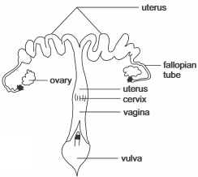
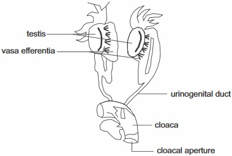
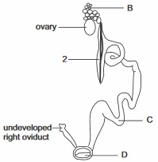
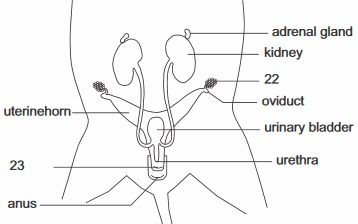

New Senior School Biology Practical Activity & Work Book Two
Chapter
9
REPRODUCTIVE SYSTEMS IN VERTEBRATES
Notable Concepts
Reproductive structure in Vertebrates(fish reptiles birds and mammals)
Reproductive structure in Vertebrates(fish reptiles birds and mammals)
Reproductive structures Functions of the reproductive parts
Differences between male and female reproductive organs
Structural differences in egg of Vertebrates
Comparing reproduction in vertebrates.
fig9.1: Female reproductive system of rabbit

fig9.2: Female reproductive organs of a hen
fig9.3:
fig9.4:
Background Information
Vertebrates are refered to as “Animals with backbones”. They are the most complex Organism in the animal kingdom.Vertebrates are of Several classes which Includes:
fishes
Amphibians e.g Frogs, toads, salamanders
Reptiles e.g. Turtle, Lizard, alligator, crocodiles,
Aves which are Birds
Mammals.
Reproduction in vertebrates is sexual reproduction.
Methods of Reproduction in Vertebrates
Reproduction in vertebrates involves
Internal or External Fertilization
Oviparity; Ovoviparity and Viviparity
Internal Fertilization: In internal fertilization in vertebrates the male releases the sperm into the body of the female through the reproductive opening to fertilize the egg within.
External Fertilization: External fertilization in Vertebrates involves, the female laying eggs into surrounding water and the males ejecting sperms over them outside the females body.
Oviparity: In Oviparity, fertilized or unfertilized eggs are shed into the external environment where the development process of the embryo is completed. The eggs are hatched out as young ones. Oviparity can be found among fishes, Amphibians, Reptiles and Birds.
Ovoviparity: In this case the eggs which are fertilized inside the females body is retained within and the embryo develops using stored food in the eggs. When developmental process is completed, the young hatch from the eggs and are released from the females body. You can find ovoviparity among certain fishes, and reptiles.
Viviparity: In viviparity, the fertilized egg(s) within the female's body developes inside the female's body obtaining nourishment therein; on development the young is born alive. All Mammals, A few fishes and reptiles are vipiparous.
fig9.8: Viviparity in humans
fig9.8: Oviparity in birds and reptile
In oviparity fertilization can be internal or external
Diagram of chicken development
5 DAYS
10 DAYS
15 DAYS
20 DAYS
Reproductive structure in Amphibians frogs and toads
fig9.7A:

fig9.7B:
Reproductive Structure of an Amphibian e.g Frog . Fertilzation is usually external: They areoviparous
Features and functions of reproductive structures in Amphibian
Male
Features
Function
Two testes
Sperm Production
Vasa efferentia
Linking each testis to sperm conducting tubules in the anterior part of the kidney
Wolffian duct
Transport channel for urine and sperm
Cloaca
Urinogenital opening through which sperm is released.
Seminal vessicle
For sperm storage
Female
Features
Function
Ovaries
Production of egg cells
Oviduct
Receives egg in body cavity and cloaca
Glands
Production of albumen
Ovisac
Storage of eggs
Cloaca
Openning for egg release
Reproductive structures of Reptiles
Oviparous and ovoviparous; Fertilization in usually internal
fig9.8: Internal Anatomy of a Lizard showing its reproductive structures
fig9.9: Amniote egg of a reptile
Features and functions of reproductive structures in Reptile
Male
Features / Structure
Functions
A pair of testes
Sperm Production
Sperm duct
A channel through which sperm flows from each testis to the cloaca and penis
Penis
Copulatory organ for ejecting sperm into the female reproductive tract
Female
Features / Structure
Function
A pair of ovaries
Production of egg cells with large amount of yolk
A pair of ovaduct
Fertilization occur at it anterior
Glands
Secretes shell and its menbranes.
Reproductive Structure of a bird (example: fowl)
fig9.91: Birds are Oviparous; fertilization is internal
fig9.92:
Features and functions of reproductive structures in birds
Male
Features / Structure
Functions
A pair of testes
Sperm production
Sperm duct
Channel through which sperm flows to the cloaca
Cloaca
Copulatory organ which forms the opening through which sperm are transferred from male to female
Female
Features / Structure
Functions
One ovary
Production of egg cells with large amount of yolk
One oviduct
Fertilization occurs at the anterior
Glands
secretes shells and its membrances
Reproductive Structure of mammals (rat)
fig9.93 A: Female
fig9.93 B: Male
Features and functions of reproductive structures in mammals (e.g. rat)
Male
Features / Structure
Functions
Testes(one pair)
Sperm production
Epididymis
For Sperm storage
Vas deferens(sperm duct)
A channel through which the sperm flows to the urethra
Scrotal sac
A housing or protective bag for testis
Prostrate gland cowper's gland and seminal vesicle
Fluid from the glands, enhances sperm mobility, provides nourishment for sperm and neutralizes acidity that may be caused by urine.
Penis
A copulatory organ which is inserted into the female inorder to release the sperm into the female reproductive organ.
Female
Features / Structure
Function
Ovary(two)
Production of egg cells or ova
Oviduct
Site for fertilization
Two (uterus)
Position or space in which the embryo develops
Vagina
A muscular wall that leads to the outside
Vulva
An external opening
General Question
1. In sexual reproduction, the cell division that gives rise to gamates is called
2. Rats are vertebrates. Fertilization among them is internal, Birds too are vertebrates fertilization among them is
external
also internal
both internal and external
3. Bird, for example: Hen lays eggs which hatch to give rise to young ones after some days. We call this method of sexual reproduction
4. Among vertebrates, the class
are practically all viviparous.
5. External fertilization always requires an _________ environment.
industrial
aquatic
aboreal
6. In the reproductive structure of a male fish, the wolffian duct is for
transporting of urine and sperm
transporting of urine only
transporting of sperm only
7. In the reproduction structure of a frog, the number of ovaries found is
8. State the function of the ovary in the reproductive structure of a bird
Formation of zygote
production of egg cell
production of sperm
9. In the reproduction structure of a lizard, the number of ovaries is two while in bird's (e.g. fowl) reproductive structure the number of ovaries is
10. The function of the seminal vesicle sac in the reproductive structure of frogs is for
11. Frogs can live on lands, but they must return to
to lay and to fertilize their eggs.
12. Both male and female birds have an opening between their legs called a
13. In birds, fertilization takes place at the
14. The sitting on the eggs by the female bird to keep the eggs warm is called
Diagram of chicken development
fig9.94: A
B
C
D
Use the diagram in fig 9.94 to answer the questions below in nos 14-16, identify and label the parts that perform the following functions
14. The part that supplies food nourishment to the embryo
15. The membrane covering the blood vessel which allows gaseous exchange
16. Which of the eggs is close to its’ time to hatch
17. What is the incubation period of a fowl(chicken) egg
In the diagram of the female reproductive system of a hen (Fig 9.95), write down the functions of B and C as answers to questions 18 and 19
18
19.
20. What is the function of D in the diagram during reproduction in bird
fig9.95:

21. The part labeled 2 functions as or for
Male and female reproductive structures / organs of rats
fig9.96: A

B
Identify and write the functions of the parts labeled 22 – 25
22.
23.
24.
25.
Write two structural difference between the male and female reproduction organs of rats
27 . State two features which distinguish a male lizard from a female lizard
28 . In a perch (an example of bony fish) Fertilization occurs in the open water and parents swim away without protecting the young. This is a case of
fertilization
29 . In female frog, the cilia lining the inner surface of the oviduct is for
30 . Male reptiles unlike amphibian have structure adapted to internal fertilization which is used to transfer sperm cells into the cloaca of the female during mating. This structure is called
Expression Exercise
1. Explain ovoviparity and differentiate it from oviparity. Use one example of animal, each for each reproductive method
2 . Consider the following vertebrates; group each of them under external fertilization, and internal fertilization
(i) Frog (ii) Perch bony fish (iii) Lizard (iv) shark cartilage (v) birds
External Fertilization
Internal Fertilization
Frog
Lizard
Perch (bony fish)
Bird
Shark
3 . Distinguish between the reproductive structures of a bird and that of a reptile
4 . Write or state the functions of the following structures in the reproduction of a vertebrate.
Ovary
Testis
Oviduct
Uterus
Cloaca
Sperm duct
5. State, among the following animals which ones are viviparous
(i) Monkey (ii) Rat (iii) Toad (iv) Fish (v) Bony fish (vi) Turtle (vii) Birds
Practical Activities
Diagrams of Eggs of reptile and that of a bird are shown in fig 9.97 A and B
fig9.97: A
B
1 (a) State four structural similarities you can observe in A and B
(b) In which of the eggs does the parent vertebrate incubate till they are hatched
(c) Parental care is given after egg of
Comparing eggs of certain vertebrate:
Eggs of fowl, lizard and amphibian were presented as specimen A, B and C
fig9.98: A
B
C
1. Identify the egg of amphibian among the specimens
(ii) State the environment where each can be found
(iii) Which of the egg is fertilized by external fertilization?
(iv) Which of the eggs do not receive more care from the female parent after they are layed